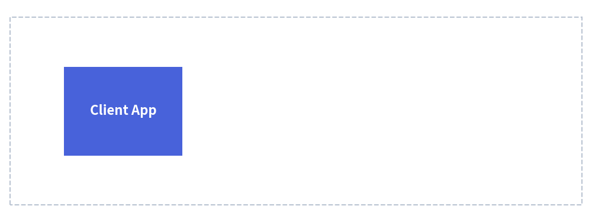

APNG Animations
Drawlib provides native support for generating Animated Portable Network Graphics (APNG).
APNG empowers developers and AI coding agents to create clean, high-framerate, multi-step architectural illustrations and animated technical visualizations using declarative Python code.
1. Why APNG in Technical Documentation?
Unlike legacy GIF animations (which are constrained to 256 indexed colors and binary transparency), APNG features:
- 24-bit RGB and 32-bit RGBA Full Color: Gradients, soft drop shadows, and subtle fills remain crisp and uncompressed.
- Alpha Channel Transparency: Transparent backgrounds blend seamlessly into light and dark documentation themes.
- Zero Extra Dependencies: Relies on native Pillow (
save_all=True), requiring no external binary packages likeffmpeg. - Universal Browser Support: Supported natively by all modern web browsers (Chrome, Firefox, Safari, Edge) and GitHub Markdown previews.
- Safe Static Fallback: Standard PNG decoders (and PDF compilers) automatically display the 1st frame as a clean static image.

2. Imports & Canvas Lifecycle
All animation classes are exported from drawlib.apng:
from drawlib.apng import Apng
from drawlib.canvas import save, setup
from drawlib.shapes import rectangle, circle
from drawlib.styles import Styles
Automatic Canvas Coordination
When an Apng instance is initialized, it automatically registers itself with the active Drawlib canvas (canvas._active_animation). You do not need to call a separate animation export method; calling standard save() captures all accumulated frames into an animated APNG file:
anim = Apng(fps=10.0)
# Define frames...
with anim.frame():
circle((50, 50), radius=10, style=Styles.Primary)
# Save unified under standard drawlib save()
save("animation.png")
3. The Apng Class API
3.1. Initialization
anim = Apng(
fps: float | None = None,
frame_rate: float | None = None,
loop: int = 0,
)
| Parameter | Type | Default | Description |
|---|---|---|---|
fps |
float | None |
10.0 |
Target playback frame rate in frames per second (e.g. 10.0 means 10 fps). |
frame_rate |
float | None |
10.0 |
Alias for fps. If both are specified, fps takes precedence. |
loop |
int |
0 |
Number of animation loops. 0 means continuous infinite looping. |
4. Defining Frames
4.1. Context Manager: with anim.frame() (Recommended)
The with anim.frame() context manager captures the canvas state at the end of the block.
with anim.frame(
duration: float | None = None,
clear: bool = True,
):
# Standard Drawlib drawing calls
circle((50, 50), radius=10, style=Styles.Primary)
| Parameter | Type | Default | Description |
|---|---|---|---|
duration |
float | None |
None |
Display duration for this frame in seconds (e.g. 1.5 for 1.5 seconds). If None, defaults to 1 / fps (e.g. 0.1s for 10fps). |
clear |
bool |
True |
Whether to clear existing canvas shapes before drawing this frame. |
4.2. Imperative Method: anim.add_frame()
For procedural code or loops where context managers are less convenient:
circle((x, y), radius=5, style=Styles.Primary)
anim.add_frame(duration=0.5, clear=True)
5. Animation Modes
Drawlib supports two fundamental animation paradigms:
5.1. Independent Frame Mode (clear=True, Default)
Each frame starts with an empty canvas. This mode is ideal for moving objects, rotating elements, or physics simulations:
anim = Apng(fps=10.0)
for x in range(10, 90, 10):
with anim.frame():
circle((x, 50), radius=5, style=Styles.Primary)
5.2. Cumulative / Step-by-Step Mode (clear=False)
Setting clear=False keeps shapes from preceding frames on the canvas. This mode is exceptionally effective for architectural explanations that reveal components stage by stage:
anim = Apng(fps=1.0)
# Stage 1: Ingress
with anim.frame(clear=True):
rectangle((20, 50), width=20, height=15, style=Styles.PrimaryFlat, text="Client")
# Stage 2: Gateway appears (Client remains)
with anim.frame(clear=False):
rectangle((50, 50), width=20, height=15, style=Styles.SecondaryFlat, text="Gateway")
# Stage 3: Database appears (Client and Gateway remain)
with anim.frame(clear=False, duration=3.0): # Hold final state for 3 seconds
rectangle((80, 50), width=20, height=15, style=Styles.AccentFlat, text="Database")
6. Timing & Duration Control
Frame Duration in Seconds
Frame timing is configured directly in seconds (e.g. duration=0.25 for a quarter of a second, duration=2.0 for two seconds).
Holding the Final Frame
To give readers sufficient time to inspect a completed diagram before the animation loops, specify an extended duration on the final frame:
anim = Apng(fps=5.0) # Standard frames display for 0.2s
for i in range(10):
with anim.frame():
draw_stage(i)
# Hold final completed architecture for 3.0 seconds
with anim.frame(duration=3.0):
draw_stage(10)
rectangle((50, 10), width=40, height=6, style=Styles.SuccessFlat, text="Deployment Complete")
7. Embedded Markdown Code Blocks
You can embed APNG animations directly inside Markdown documents using the drawlib code fence. The document compiler automatically compiles the code block into an animated APNG file:
# Live Event Pipeline
```drawlib 600px center file:live_pipeline.png caption:"Event Progression"
from drawlib.apng import Apng
from drawlib.canvas import setup
from drawlib.lines import line
from drawlib.shapes import circle, rectangle
from drawlib.styles import Styles
setup(width=100, height=40)
anim = Apng(fps=10.0)
for x in range(30, 75, 5):
with anim.frame():
rectangle((20, 20), width=18, height=16, style=Styles.PrimaryFlat, text="App")
rectangle((80, 20), width=18, height=16, style=Styles.AccentFlat, text="Queue")
line((29, 20), (71, 20), style=Styles.MutedDashed)
circle((x, 20), radius=3, style=Styles.Secondary)
```
When compiled with drawlib build html or drawlib build markdown, live_pipeline.png is generated in the document's companion image folder and rendered natively in the browser.
8. Built-in Lossless Compression & Performance
Drawlib automatically applies multi-tier lossless optimization when saving APNG files:
- Sub-frame Bounding Box Cropping: Only the changed pixels (
delta.getbbox()) between consecutive frames are encoded, drastically reducing raw image data. - Maximum Zlib Compression (
compress_level=9): Applied automatically to all frame image chunks. - Huffman Tree Optimization (
optimize=True): Generates optimized compression tables.
Best Practice for Animation Performance
- Frame Rate (
fps): For technical diagrams, a frame rate of 5 to 10 FPS provides fluid motion while maintaining compact file sizes (typically under 100 KB) and fast build times.